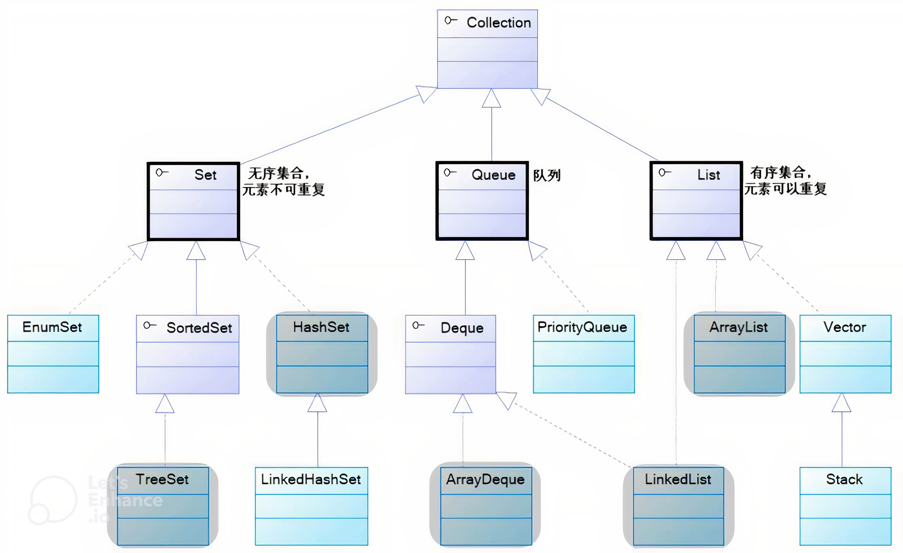
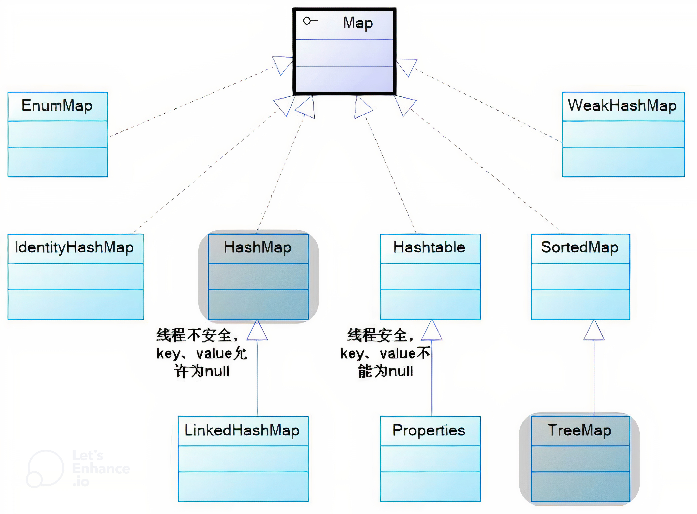

Java集合（总结）
Java 集合
Java 中的集合类主要由 Collection 和 Map 这两个接口派生而出，其中 Collection 接口又派生出三个子接口，分别是 Set、List、Queue。所有的 Java 集合类，都是 Set、List、Queue、Map 这四个接口的实现类。
- Set 代表无序的、元素不可重复的集合
- List 代表有序的、元素可以重复的集合
- Queue 代表先进先出（FIFO）队列
- Map 代表具有映射关系（key-value）集合


Collection 和 Collections 的区别
- Collection：是最基本的集合接口，它的直接继承接口有 List，Set 和 Queue
- Collections：它是集合类的一个工具类，此类不能被实例化，实现对各种集合的搜索、排序、线程安全等操作
List
ArrayList 和 LinkedList
区别
- ArrayList 底层是基于数组实现的，查找快，增删较慢；LinkedList 底层是基于链表（JDK1.6 之前为循环链表，JDK1.7 取消了循环）实现的，查找慢，增删快
- LinkedList 比 ArrayList 更占内存，因为 LinkedList 的节点除了存储数据，还存储了两个引用，一个指向前一个元素，一个指向后一个元素；而 ArrayList 的空间浪费主要体现在 list 列表的结尾会预留一定的容量空间
- LinkedList 不支持高效的随机元素访问，而 ArrayList 支持（实现了 RandomAccess 接口）
ArrayList 的增删未必比 LinkedList 要慢
- 如果增删都是在末尾来操作，此时 ArrayList 就不需要移动和复制数组来进行操作了
- 如果删除操作的位置在中间，由于 LinkerList 的消耗主要是在遍历上，ArrayList 的消耗主要是在移动和复制上。如果数据量有百万级时，LinkedList 的遍历速度是要慢于 ArrayList
线程安全的 List
| 方法 | 示例 | 原理 |
|---|---|---|
| Vector | List list = new ArrayList(); 替换为 List list = new Vector <>(); |
使用了 synchronized 关键字 |
| Collections.synchronizedList(list) | List < String > list = Collections.synchronizedList(new ArrayList < String >()); 操作外部 list，实际上修改的是原来 list 的数据 |
所有方法都加了 synchronzied 修饰，加锁的对象是当前 SynchronizedCollection 实例 |
| CopyOnWriteArrayList | CopyOnWriteArrayList < String > list = new CopyOnWriteArrayList < String >(); 适用于读多写少的并发场景 |
Write 的时候总是要 Copy（将原来 array 复制到新的 array，修改后，将引用指向新数组）。任何可变的操作（add、set、remove 等）都通过 ReentrantLock 控制并发 |
Map
线程安全的 Map
- 使用 Collections 工具类，将线程不安全的 Map 包装成线程安全的 Map
- 使用 java.util.concurrent 包下的 Map，如：ConcurrentHashMap
- 不建议使用 Hashtable，虽然 Hashtable 是线程安全的，但是性能较差
HashMap 与 Hashtable
区别：
- Hashtable 不允许 key 和 value 为 null，每个 key 值获取其 hash 值时，必须调用 key.hashCode()方法，此时 key 为 null 时也会抛出 NullPointerException；而 HashMap 则允许 key 和 value 为 null，HashMap 中的 key 获取其 hash 值的方法是重写的
- 创建时如果不指定容量初始值，Hashtable 默认的初始大小为 11，之后每次扩充，容量变为原来的 2*n+1；HashMap 默认的初始化大小为 16，之后每次扩充，容量变为原来的 2 倍
- 创建时如果给定了容量初始值，那么 Hashtable 会直接使用你给定的大小；而 HashMap 会将其扩充为 2 的幂次方大小，HashMap 总是使用 2 的幂作为哈希表的大小
- Hashtable 是线程安全的，但是 Hashtable 线程安全的策略实现代价却太大，get/put 相关操作都是 synchronized 的，相当于给整个 hash 表加了一把大锁。多线程访问时候，只要有一个线程访问或操作该对象，那其他线程只能阻塞，相当于将所有的操作串行化，在竞争激烈的并发场景中性能就会非常差；HashMap 不是线程安全的
- Hashtable 和 HashMap 的方法大都是一样的，不过 Hashtable 的方法都加上了 synchronized
- JDK1.8 以后的 HashMap 在解决哈希冲突时有了较大的变化，当链表长度大于阈值（默认为 8）且表数组长度 >= 64 时，将链表转化为红黑树，以减少搜索时间。Hashtable 没有这样的机制
HashMap 与 ConcurrentHashMap
区别：
- HashMap 不是线程安全的；而 ConcurrentHashMap 是线程安全的
- ConcurrentHashMap1.7 采用锁分段技术，将整个 Hash 桶进行了分段 Segment，也就是将这个大的数组分成了几个小的分段 Segment，而且每个小的片段 Segment 上面都有锁存在，那么在插入元素的时候就需要先找到应该插入到哪一个片段 Segment，然后再在这个片段上面进行插入，而且这里还需要获取 Segment 锁，这样做明显减小了锁的粒度
Hashtable 和 ConcurrentHashMap
区别：
- Hashtable 和 ConcurrentHashMap 相比，效率低。Hashtable 之所以效率低主要是使用了 synchronized 关键字对 put 等操作进行加锁，而 synchronized 关键字加锁是对整张 hash 表的，即每次锁住整张表让线程独占，致使效率低下；而 ConcurrentHashMap 在对象中保存了一个 Segment 数组，即将整个 hash 表划分为多个分段，而每个 Segment 元素，即每个分段则类似于一个 Hashtable，在执行 put 操作时首先根据 hash 算法定位到元素属于哪个 Segment，然后对该 Segment 加锁即可。因此，ConcurrentHashMap 在多线程并发编程中可以实现多线程 put 操作
- 在 JDK1.7 的时候，ConcurrentHashMap（分段锁）对整个桶数组进行了分割分段（Segment），每一把锁只锁容器其中一部分数据，多线程访问容器里不同数据段的数据，就不会存在锁竞争，提高并发访问率。到了 JDK1.8 的时候已经摒弃了 Segment 的概念，而是直接用 Node 数组+链表+红黑树的数据结构来实现，并发控制使用 synchronized 和 CAS 来操作。Hashtable（同一把锁）：使用 synchronized 来保证线程安全，效率非常低下。当一个线程访问同步方法时，其他线程也访问同步方法，可能会进入阻塞或轮询状态，如使用 put 添加元素，另一个线程不能使用 put 添加元素，也不能使用 get，竞争会越来越激烈，效率越低
HashMap 和 TreeMap
区别：
- HashMap 继承 AbstractMap 类，覆盖了 hashCode()和 equals()方法，以确保两个相等的映射返回相同的哈希值；TreeMap 继承 SortedMap 类，它保持键的有序顺序
- HashMap 是基于哈希表实现的，可以调整初始容量和负载因子；TreeMap 是基于红黑树实现的，没有调优选项，因为红黑树总是处于平衡的状态
ConcurrentHashMap1.7 与 1.8
扩容的区别
- JDK 1.7 中的扩容：
-
基于 Segment：ConcurrentHashMap 是由多个 segment 组成的，每个 segment 中包含一个 HashMap。当某个 segment 内的 HashMap 达到扩容阈值时单独为该 segment 进行扩容，而不会影响其他 segment 。
-
扩容过程：每个 segment 维护自己的负载因子，当 segment 中的元素数量超过阈值时，该 segment 的 Hashmap 会扩容，整体的 ConcurrentHashmap 并不是一次性全部扩容。
- JDK 1.8 中的扩容：
-
全局扩容：ConcurrentHashMap 取消了 segment，变成了一个全局的数组（类似于 Hashmap）。因此，当 ConcurrentHashMap 中任意位置的元素超过阈值时，整个 ConcurrentHashMap 的数组都会被扩容。
-
基于 CAS 的扩容：在扩容时， ConcurrentHashMap 采用了类似 HashMap 的方式，但通过 CAS 操作确保线程安全，避免了锁住整个数组。在扩容时，多个线程可以同时帮助完成扩容操作。
-
渐进式扩容：JDK1.8 的 ConcurrentHashMap 引入了渐进式扩容机制，扩容时并不是一次性将所有数据重新分配，而是多个线程共同参与，逐步迁移旧数据到新数组中，降低了扩容时的性能开销。
Set
TreeSet 和 HashSet
区别：
- HashSet 中的元素可以是 null，但 TreeSet 中的元素不能是 null
- HashSet 不能保证元素的排列顺序，而 TreeSet 支持自然排序、定制排序两种排序的方式
- HashSet 底层是采用哈希表实现的，而 TreeSet 底层是采用红黑树实现的
Queue
ArrayDeque 与 LinkedList
区别：
- ArrayDeque 是基于可变长的数组和双指针来实现，而 LinkedList 则通过链表来实现
- ArrayDeque 不支持存储 NULL 数据，但 LinkedList 支持
- ArrayDeque 是在 JDK1.6 才被引入的，而 LinkedList 早在 JDK1.2 时就已经存在
- ArrayDeque 插入时可能存在扩容过程，不过均摊后的插入操作依然为 O（1），虽然 LinkedList 不需要扩容，但是每次插入数据时均需要申请新的堆空间，均摊性能相比更慢
从性能的角度上，选用 ArrayDeque 来实现队列要比 LinkedList 更好
Iterator
Iterator 的使用
- hasNext()：检查序列中是否还有元素
- next()：获得序列中的下一个元素
- remove()：将迭代器新返回的元素删除
ListIterator 的使用
- add(E e)：将指定的元素插入列表，插入位置为迭代器当前位置之前
- hasNext()：正向遍历列表
- hasPrevious()：逆向遍历列表
- next()：返回列表中 ListIterator 指向位置后面的元素
- nextIndex()：返回列表中 ListIterator 所需位置后面元素的索引
- previous()：返回列表中 ListIterator 指向位置前面的元素
- previousIndex()：返回列表中 ListIterator 所需位置前面元素的索引
- remove()：从列表中删除 next()或 previous()返回的元素
- set(E e)：从列表中将 next()或 previous()返回的元素更改为指定元素
Enumeration 的使用
- hasMoreElements()：是否包含更多的元素
- nextElement()：返回下一个元素
Iterator 和 ListIterator
区别：
- Iterator 可以应用于所有的集合，而 ListIterator 只能用于 List 及其子类型
- ListIterator 有 add 方法，可以向 List 中添加对象，而 Iterator 不能
- ListIterator 既可以向前遍历也可以向后遍历，而 Iterator 只能向后遍历
- ListIterator 可以定位当前索引的位置（nextIndex()和 previousIndex()），Iterator 没有此功能
Iterator 和 Enumeration
区别：
- 与 Enumeration 相比，Iterator 更加安全，当一个集合正在被遍历的时候，它会阻止其他线程去修改集合，否则会抛出 ConcurrentModificationException 异常，这就是 fail-fast 机制
- Enumeration 和 Iterator 能读取集合的数据，但 Iterator 能够删除元素，Enumeration 并不能删除元素
- Enumeration 速度是 Iterator 的 2 倍，同时占用更少的内存，但是 Iterator 远远比 Enumeration 安全
fail-fast 与 fail-safe
- fail-fast（快速失败）：直接在容器上进行遍历，在遍历过程中，一旦发现容器中的数据被修改了，会立刻抛出 ConcurrentModificationException 异常导致遍历失败
1 |
|
- fail-safe（安全失败）：这种遍历基于容器的一个克隆，因此对容器内容的修改不影响遍历，可以在多线程下并发使用、修改，例如：ConcurrentHashMap 和 CopyOnWriteArrayList
原理：采用安全失败机制的集合容器，在遍历时不是直接在集合内容上访问的，而是先复制原有集合内容，在拷贝的集合上进行遍历，由于迭代时是对原集合的拷贝进行遍历，所以在遍历过程中对原集合的修改并不能被迭代器检测到，所以不会触发 ConcurrentModificationException
其他
Comparable 和 Comparator 的区别
- Comparable 是通过重写 compareTo 方法实现排序的，而 Comparator 是通过重写 compare 方法实现排序的；
- Comparable 必须由自定义类内部实现排序方法，而 Comparator 是外部定义并实现排序的；
- 用 Comparable 简单， 只要实现 Comparable 接口的对象直接就成为一个可以比较的对象，但是需要修改源代码；用 Comparator 的好处是不需要修改源代码， 而是另外实现一个比较器， 当某个自定义的对象需要作比较的时候，把比较器和对象一起传递过去就可以比大小了